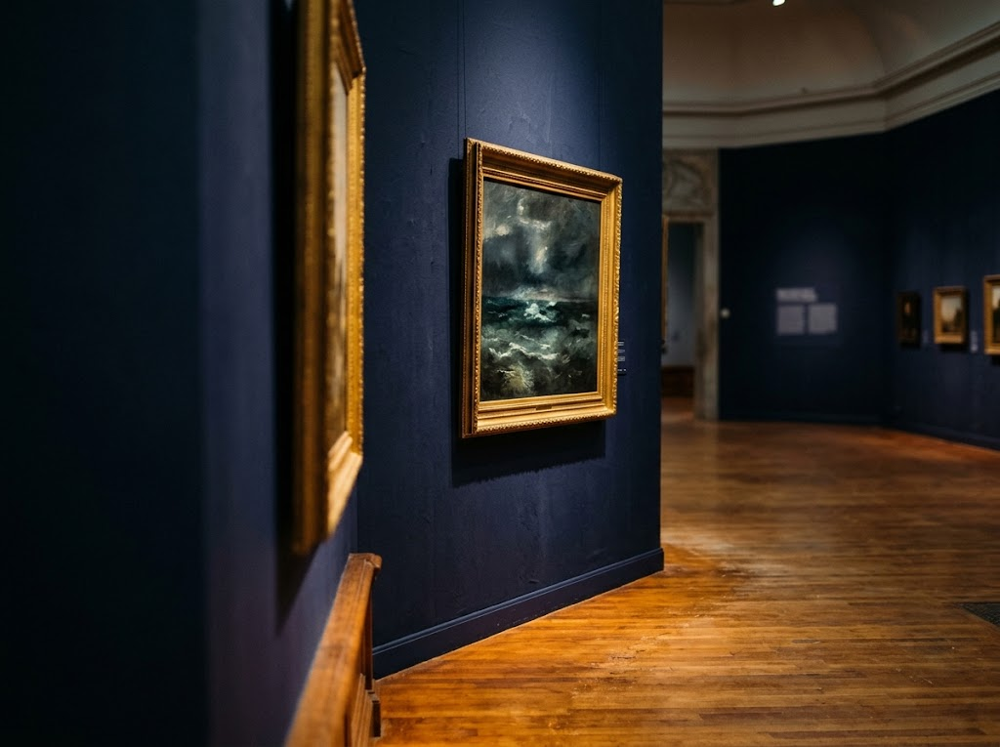
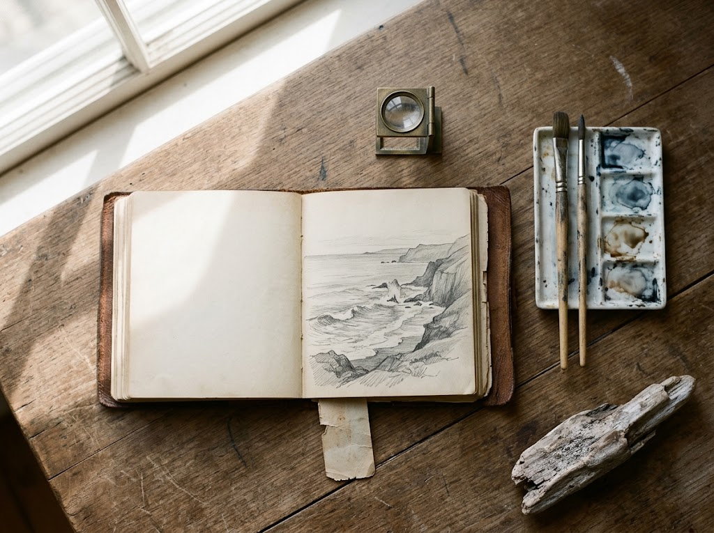

★★★★
第一、第二展示室が企画系、第三、第四展示室が常設展(こちらは撮影禁止)。居串佳一画伯の遺族が纏まった点数を寄付した事より美術館が開館。道内でも歴史の長い公立美術館だ。町の中心部の端の文化会館のそばにあるため、JRで来た旅人にとってはやや行きづらいかもしれない。
満州滞在やアイヌに題を取った作品群もあり、昭和初期から戦中を経てパリ遊学に憧れながらも客死した一人の画業を知ってほしいと思う。
オホーツクの風土が育てた作家たちの絵画、彫刻、版画。網走で半世紀以上、地域の美術を守り続ける美術館です。
網走ゆかりの作家と、オホーツク地域を題材にした作品を中心に収蔵・展示しています。絵画、彫刻、版画と、扱うジャンルは多彩です。
居串佳一をはじめ、高橋道雄、松樹路人らの作品を通して、この土地の自然と風土がどのように描かれてきたかをたどれます。

この地で生まれ、この地を描いた作品が、収蔵の核になっています。風土と結びついたコレクションは、網走の美術館ならではの特色です。
企画展も頻繁に開催しており、訪れるたびに異なる作品と出会えます。
1972年の開館は、市内の美術収集家・宮川辰雄氏から、網走出身で独立美術協会で活躍した画家、居串佳一の油絵遺作38点の寄贈を受けたことがきっかけです。
北海道内で2番目に新築された美術館として誕生し、以来、地域の美術文化の拠点として歩んできました。

第一、第二展示室が企画系、第三、第四展示室が常設展(こちらは撮影禁止)。居串佳一画伯の遺族が纏まった点数を寄付した事より美術館が開館。道内でも歴史の長い公立美術館だ。町の中心部の端の文化会館のそばにあるため、JRで来た旅人にとってはやや行きづらいかもしれない。
満州滞在やアイヌに題を取った作品群もあり、昭和初期から戦中を経てパリ遊学に憧れながらも客死した一人の画業を知ってほしいと思う。
オホーツクの周辺で数少ない美術館の一つです。歩いて回るのにちょうど良い広さで、じっくり作品を鑑賞することができます。